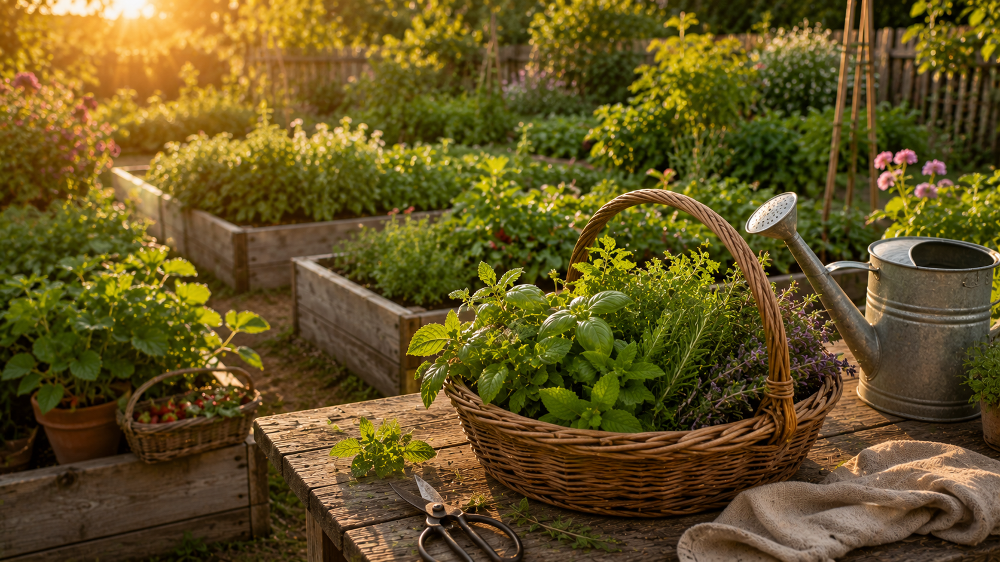

Garden Tips · Seasonal Guide
A complete seasonal planting calendar for home gardeners — from herbs and berries to fruit trees and bar-ready vegetables. Covering all USDA hardiness zones with organic growing practices throughout.

Know Your Zone
Every planting recommendation on this page references USDA hardiness zones. Find your zone at planthardiness.ars.usda.gov — just enter your zip code. Here's a simplified breakdown of what each zone range means for your garden.
The Year at a Glance
Gardening is front-loaded — the work you do in late winter and early spring determines most of your harvest. Here's the rhythm of a productive bar garden through the year.
Spring is about getting things in the ground at the right time. Start tender herbs indoors 6–8 weeks before your last frost date. Harden off seedlings before transplanting. This is your highest-leverage window — a week early or late matters.
Summer is harvest season. The job shifts from planting to maintaining, harvesting, and preserving. Keep picking herbs to prevent bolting. Make syrups when yields peak. Watch for heat stress and water consistently.
Fall is for wrapping up warm-season crops and setting up next year. Plant cool-season herbs while temperatures drop. Divide perennials. Compost exhausted plants. This season's prep is next season's head start.
Winter is for planning, ordering seeds, and maintaining what's still growing. In zones 8+ many herbs continue producing. In colder zones, focus on indoor herb growing and soil building. Prune fruit trees while dormant.
Month by Month
Timing shifts by zone — adjust earlier for zones 8–10, later for zones 3–5. Zones 6–7 follow the baseline timing shown here. Items marked with * are start-indoors tasks.
Know What You're Growing
From easy perennials to trickier fruiting plants. Know what each plant needs and you'll rarely lose one.
Feed the Garden
Organic fertilizing is about building soil health over time, not just feeding plants. Healthy soil feeds the plant; sick soil makes you dependent on synthetic inputs. These are the products and practices that make a real difference.
Drink responsibly. Every mocktail on this site is just as good as the cocktail version. Enjoy the garden. Enjoy the bar. Be safe, be kind, and look after each other.